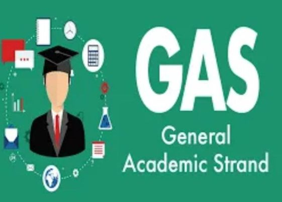

GAS
General Academic Strand caters students who are not yet sure of what course or degree they want to take in college. This strand was designed so that indecisive learners can proceed with any college program. Though, learners under this strand will take/may not take bridging programs (depending on the school) for the subjects not taken during Senior High.
